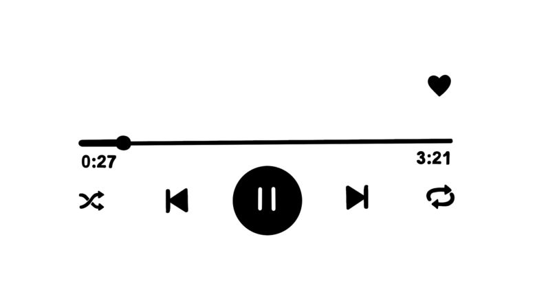

En la actualidad estamos rodeados de sitios web donde confluyen muchas de nuestras actividades sociales y de interacción.Escuchar música es una actividad ligada a casi todo lo que hacemos, por ende su transformación evoluciona constantemente y cada vez más se generan nuevos espacios donde alojar la música.
